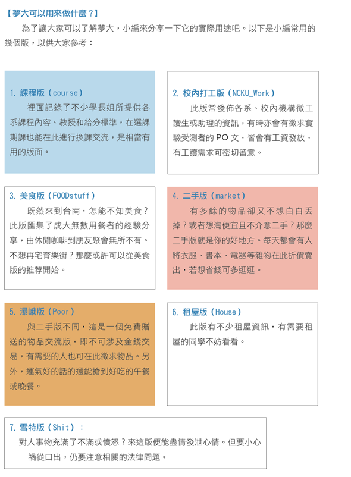
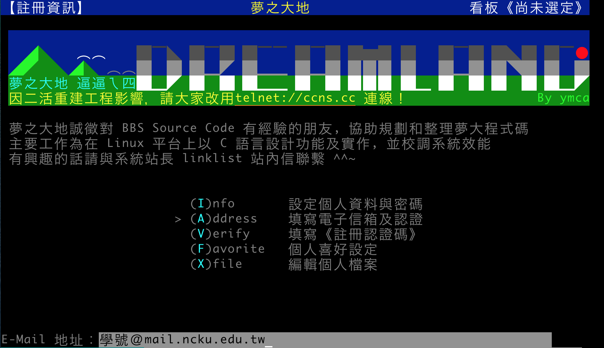
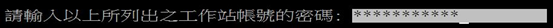
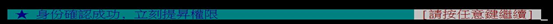

成大BBS──夢之大地
進來成大，有一個不可不知的BBS，便是夢之大地(簡稱夢大)。在夢大，你能得知各系課程資訊、二手物品交易情況、租屋和工讀途徑等等的資料。
基本上夢大的性質與PPT相同，如果是「鄉民」的話應該很快上手，不是的話也不用擔心，本篇將為各位作簡單介紹。
【BBS?】
BBS本身的操作跟我們平常使用的網頁完全不一樣，全部指令都是由鍵盤一手包辦（也就是說滑鼠沒用），剛開始可能會覺得很難用，但多用幾次就會了，上手並不難。
【夢大可以用來做什麼?】

各版進入順序
課程版：Course
(c)class > (8)NCKU > (6) Course
美食版：FOODstuff
(c)class > (13)leisure > (16) > Foodstuff
校內打工版：NCKU-Work
(c)class > (8)NCKU > (54) NCKU_Work
二手版：market
(c)class > (11)live > (1) information > (15)market
曝兒版：Poor
(c)class > (11)live > (1) information > (17)Poor
租屋版：House
(c)class > (11)live > (1) information > (11)Hourse
雪特版：Shit
(c)class > (12) feel > (46) Shit
【瀏覽器】
使用為BBS設計的瀏覽器，直接從網上下載就可以了(點擊可直接下載)
WINDOWS: PCMAN、KKMAN
MAC: Nally、Welly
夢大網址：telnet://ccns.cc
【註冊夢大】
瀏覽夢大有兩種身份：guest（訪客）以及註冊者，當然後者才能完全使用以上的提到的版面。不少人對於註冊一事十分煩惱，為了解決此問題，小編教教大家如何才能成功註冊。
(1) 打開剛剛安裝的瀏覽器，網址輸入telnet://ccns.cc，進入登入頁面，在代號一欄輸入「new」後按「Enter」鍵

(2)在代號一欄輸入心中想用的ID(只能有英文)，按「Enter」鍵後在密碼一欄輸入設定密碼後再按「Enter」鍵

(3) 在暱稱一欄輸入將來想使用的暱稱(中英數皆可)，按「Enter」鍵
(4) 最後輸入真實姓名以及居住地址，按「Enter」鍵

(5)結束後會進入主選單

接下來只須進行認證步驟便能成為註冊者
(6) 認證步驟：在上圖「夢大服務區」按「→」，再按進「個人工具區」→「註冊及設定個人資訊」→「填寫電子信箱及認證」
＊郵箱方面，謹記使用學校給予每位同學的個人專用電郵：學號@mail.ncku.edu.tw

按「Enter」鍵後出現「是否使用 POP3 認證？」，輸入「Y」後按「Enter」鍵
接著會出現與遠端主機連線，待連線後

再輸入「成功入口」的密碼

然後出現以下信息，便代表註冊成功了！

【常用的指令】
註冊成功後，小編告訴大家一些實用指令，便能開始使用夢大了。
(註: 大寫者按"shift+字母" 或是在caps lock打開時按下該字母即可)
- ↑↓← → :也就是方向鍵，可用來瀏覽文章。
- h :取得該版【看板操作說明】，要是忘了指令可查看。
- X(大寫) :推／噓文，即回覆別人的文章，可根據你喜歡的文章與否來決定推或噓。
- / :搜尋文章，可輸入關鍵字尋找。
- ctrl+p :發表文章，選擇發表類型及輸入標題，打上內容後然後按
- E(大寫) :在文章列表按大E，便可修改內容。再按“ctrl+w”，列表可選擇修改標題。
- TAB :進入精華版
- a :將看板加入我的最愛
- d :將看板我的最愛刪除
- 回覆文章 :在內文中按 “r” ，共有三種方式：(F)看板、(M)作者信箱、(B)二者皆是。（如果只是很短的內容，直接用上面的X就可以了）